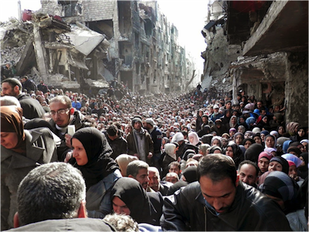

THEORIZING 21C
A Yarmouk Photograph
Carl E. Kandutsch
If you stand right fronting and face to face to a fact, you will see the sun glimmer on both its surfaces, as if it were a cimitar, and feel its sweet edge dividing you through the heart and marrow, and so you will happily conclude your mortal career.
Henry David Thoreau, Walden
In her book Regarding the Pain of Others, Susan Sontag writes:
Transforming is what art does, but photography that bears witness to the calamitous and the reprehensible is much criticized if it seems too "aesthetic"; that is, too much like art. The dual powers of photography--to generate documents and to create works of visual art--have produced some remarkable exaggerations about what photography ought or ought not to do. Photographs that depict suffering shouldn't be beautiful, as captions shouldn't moralize. In this view, a beautiful photograph drains attention from the sobering subject and turns it toward the medium itself, thereby compromising the picture's status as a document. The photograph gives mixed signals. Stop this, it urges. But it exclaims, What a spectacle! [1]
Near the end of her book, Sontag continues:
So far as photographs with the most solemn or heartrending subject matter are art--and this is what they become when they hang on walls, whatever the disclaimers--they partake of the fate of all wall-hung or floor-supported art displayed in public spaces. That is, they are stations along a--usually accompanied--stroll. . . . Up to a point, the weight and seriousness of such photographs survive better in a book, where one can look privately, linger over the pictures, without talking. Still, at some moment the book will be closed. The strong emotion will become a transient one. Eventually, the specificity of the photographs' accusations will fade; the denunciation of a particular conflict and attribution of specific crimes will become a denunciation of human cruelty, human savagery as such. The photographer's intentions are irrelevant to this larger process. [2]
Sontag's point is that photographic images can be and almost inevitably are aestheticized, either by design (when the photographer's intention is to make art) or by the way they are displayed (for example, when documentary photographs are displayed on gallery walls). As a general matter, the aestheticization of images seems to be a fate almost inevitable in our mass-consumption society, which compulsively commodifies every conceivable sensuous object and experience for commercial use. But in any particular case, is it true that the aesthetic qualities of an image must be at odds with the image's political or moral significance? Is it not possible for the political significance of a photograph to be fully articulated in and by its artistic qualities, so that the image's moral claim on its audience only makes sense insofar as it is expressed in the language of visual art?
With these questions in mind, I would like to look at a recent photograph that has remained with me since I first encountered it on Phil Weiss's website Mondoweiss on February 20, 2015. [3]

Palestinian residents of the Yarmouk refugee camp line up to receive food supplies, March, 2014. (Photo: AP)
The photograph was released by the UN agency for Palestinian refugees (UNRWA) and depicts residents of the beseiged Palestinian refugee camp of Yarmouk (located in Damascus, Syria) in queue to receive food supplies provided by the United Nations. According to a February 26 article on the Guardian's website,
More than 18,000 people are existing under blockade inside Yarmouk, enduring acute shortages of food, medicines and other essentials. Much of the camp has been destroyed by shelling, and attempts to deliver aid to those inside have been hampered by continued fighting in Syria's three-year-old civil war.
United Nations workers have delivered about 7,000 food parcels over recent weeks, following negotiations between the Syrian government, rebel forces and Palestinian factions within the camp. The most recent delivery, of 450 parcels, was on Wednesday. The UN acknowledges that the level of aid is a "drop in the ocean."
Yarmouk has been cut off since last July. Many residents are now weak and severely malnourished, as well as being exposed to the risk of disease, or death and injury from fighting . . .
"It's like the appearance of ghosts. These are people who have not been out of there, that have been trapped in there not only without food, medicines, clean water--all the basics--but also probably completely subjected to fear because there was fierce fighting. . . . They can hardly speak. I tried to speak to many of them, and they all tell the same stories of complete deprivation." [4]
The article published in Mondoweiss consists of the testimony of four residents of Yarmouk; the common theme of the testimonies is what residents perceive as their betrayal by the Assad government, the Palestinian Front for the Liberation of Palestine-General Command (PFLP-GC, allied with the Syrian government), the Palestinian Authority, and the world at large: "All I would say to the Palestinians outside and to the whole world is that we are alone. We in Yarmouk are alone." The witnesses do not appeal for help or charity; rather, they ask for acknowledgment of their lives--of the fact that they live in the world along with the rest of us; as one witness states: "We aren't asking [Palestinians outside of Syria] to burn embassies or do anything huge, we are only asking for them to have peaceful demonstrations so that our voices, which have been choked, may reach the world. I don't count on any government. I count on people who are able to amplify our voices. I count on them to come out and speak. I count on people, not governments. Our cause is a human one before it is a political one."
The photograph is visually compelling; to view it is to feel the claim it makes upon the one's attention. But what sort of claim is that? I believe that each viewer of the photograph--that is, each viewer who is struck by the image in a way that is comparable to the way I am struck by it--must ask him- or herself an important question: is the image's claim on our attention the sort of claim upon one's moral conscience that is implicit in documentary evidence of past atrocities, such as photographs of lynchings during the Jim Crow era? Or is it the sort of claim upon one's aesthetic sensibility that radiates from the surface of a convincing work of visual art? Or perhaps the sort of claim that is implied in Roland Barthes's notion of the "punctum"--a detail in the image that "pricks" the viewer in a specifically way? [5]
Beginning with the third option, I do not believe that Barthes's concept of the punctum is useful in discussing a photograph like the Yarmouk picture for several reasons (none of which deny that some viewer may find such a punctum in the image). First, the viewer's experience of the punctum is essentially a private experience, involving for example the evocation of a forgotten memory in the mind of the viewer. Whereas however one experiences the Yarmouk picture, given the political nature of its subject, the image's claim on our attention must be a public claim--a claim on the world's attention. Second, given its essentially private nature, the significance of the punctum may or may not be communicable to another viewer of the photograph. Even if that significance is not communicable, the punctum remains intact in the experience of the viewer for whom it is a punctum; whereas if philosophy involves the discovery of something that I cannot fail to know, then others cannot fail to know it as well as I do. Philosophy speaks in the first person plural. If that is so, then the philosophical significance of a photograph (like the philosophical significance of anything else) must be communicable. [6]
Moving to the first two characterizations of the image's claim, my way of approaching these questions will be to ignore the fact that the Yarmouk photograph is an instance of photojournalism and was not made as a work of art. My justification for ignoring the categories of "journalism" and "art" is that--at least with respect to this photograph--the very distinction between the two is prejudicial. By insisting that the photograph must be one or the other we dictate to ourselves how it must be seen; but if we already know before looking we forego the opportunity to learn by seeing and we fail to see just how mysterious an object a photograph is, this one in particular.
Let us begin by noticing that if the Youmouk photograph is a "document," it is one that shuns most of the established conventions of photojournalism. For example, the picture does not attempt to freeze fast-moving events by depicting an instantly recognizable fragment of a larger situation in order to convey a single dramatically perspicacious point--the photojournalistic norm. Instead, the picture offers a panoramic view of the scene depicted, and the scene depicted is one of endurance. By withholding focus on a single dramatic moment, the picture invites the eye to linger and become engrossed in the sheer quantity of visual detail that fills each portion of the photograph. In this sense, the protracted viewing that the composition requires also enhances the photograph's theme, which is people enduring. My use of the word "endurance" is meant to evoke its double sense of suffering by enduring hardship and of continuing to exist in a certain state--for example, a state of waiting. The Palestinian refugees depicted in the photograph are waiting for their turns at the UN supply dispensation station located off-camera. Their waiting their turns epitomizes the condition of Palestinian refugees generally, who have been waiting to return to their homes for 67 years, waiting their turn for justice. They will continue to wait and they will continue to endure.
What the image presents to view is a hoard of desperate people funneling out of (i.e., toward the camera and the beholder) a bombed-out urban street receding in perspective as far as the eye can see. The dilapidated buildings that line the street have been reduced to ruined concrete shells and the sidewalks are apparently strewn with rubble on which the people situated right and left stand, giving them a elevated vantage point from which to view those ahead of them gathering at a UN supply station which is apparently located just below and to the left of the camera. The effect is that of an overflowing river of humanity crowding toward and perhaps on the verge of entering the viewer's space this side of the picture plane. A large solitary scorched tree trunk bereft of branches leans eerily to the right in the far distance.
The visual force of the image is generated through the coexistence of two pictoral norms that in the history of Western painting have pointed in opposite directions, namely absorption and "facingness." Absorption refers to the apparently single-minded immersion of the depicted personnages in a contemplative state or in collective action that renders them unaware of the camera and, by extension, of the viewer of the picture. In Western (especially French) painting, the depiction of figures deeply absorbed in dramatic or contemplative activities meant that they would not be seen as posing or performing for an audience (the viewer of the picture). Any suggestion that the painted figures were in any sense performing for the beholder was seen as undermining the integrity or completeness of the world depicted in the painting, precluding the sense of presentness that was the goal of ambitious painting. [7] The depicted world had to be sealed off in order that its presentness to the beholder could be pictorially secured. In the Yarmouk photograph, the figures comprising the enormous crowd are all but completely immersed in a single-minded collective effort to advance to the front of the line that ends at the UN supply dispensation station implied in the picture's immediate foreground. The pressing desperate nature of this collective effort preempts any hint that the figures depicted are aware of being photographed, and this very unawareness gives the picture dramatic force. It also provides visual confirmation of the Yarmouk residents' sense of isolation and abandonment as expressed by aid worker Ahmed: "All I would say to the Palestinians outside and to the whole world is that we are alone. We in Yarmouk are alone."
By contrast, "facingness" refers to the sense in which the picture addresses itself to and confronts the beholder by facing directly out into the viewer's space on "this" side of the picture plane as in portrait painting. [8] In the Yarmouk photograph, facingness is registered in the "vertical" (as opposed to lateral) orientation of the image overall, the sense that the crowd is funneling out of deep space directly toward the camera such that the wave of humanity threatens to virtually spill out into the viewer's space on "our" side of the picture. It is also registered in the fact that at least some members of the crowd do show awareness of the camera by gazing out into the viewer's space. In particular, a number of the figures on the right-hand side of the photograph--including a middle-aged man whose face appears just over the left shoulder of the man in a black leather jacket gazing downward in the right foreground, and several of the hijab-wearing women anxiously awaiting their turns at the front of the line--seem to be looking directly into the camera's lens. In addition, there is the man dressed in an olive green jacket with a head-wrap and a scarf around his neck; we see more of this man's body than anyone else's in the photograph, and his gaze into the camera, positioned roughly at the center of the picture grouped with several other men, one looking downward and the other to his right (the viewer's left), constitutes something like the focal point of the image overall. Yet the facial expressions of these individuals seems perfectly deadpan; their faces reveal nothing about the their states of mind, which means that the possibility of imaginative communication between depicted figures and viewer is foreclosed.
I believe that the unusually strong visual impact of the Yarmouk photograph is rooted in its co-mingling of absorptive themes with the confrontational orientation of the picture overall. Visual indicators of the picture's facingness relative to the beholder are seen as confirming or deepening (rather than contradicting) the crowd's indifference to the camera as is expressed in the depicted figures' near-complete absorption in a single collective action that seems to unfold in a world from which the viewer is excluded. This implies that whatever it is that the picture's facingness means, it does not mean it in the way of any sort of direct emotional or other rhetorical appeal. It does not, for example, seek to persuade the viewer of anything by, say, appealing to one's sympathies or political viewpoint. But if not by way of rhetorical appeal, what is the Yarmouk photograph's mode of address to the beholder?
Traditionally, each art has been able to represent reality by means of specific conventions that allow its audience to witness human suffering without intervening in the action. For example, the audience for a Shakespearean tragedy could not intervene to save Othello because rushing up onto the stage to stop him from murdering Desdemona would only disrupt the play. However, in photographs (both still and moving pictures) the audience's absence from the reality depicted is not secured by convention but automatically guaranteed by the technology of photography (i.e., by the fact that photographs are manufactured rather than hand-made). (This is true even in the age of "selfies," which perhaps should be seen as expressing our anxiety over the implication that we are isolated and invisible in the presence of the photographic image.) Thus, according to philosopher Stanley Cavell, the fact that the audience in a movie theater is invisible and inaudible "is not part of a convention I have to comply with; the proceedings do not have to make good the fact that I do nothing in the face of tragedy, or that I laugh at the follies of others. . . . I am present not at something happening, which I must confirm, but at something that has happened, which I absorb, like a memory." [9]
What we see in a photograph is not a world that is inaccessible because it is different from our world and so is accessed only by means of specific conventions--for example, the world of tragic drama is populated by mad kings, exiled princesses, and tormented princes, which are present to the audience only as long as the play lasts. On the contrary, the world we see in a photograph is the same world in which we on "our" side of the picture's surface live. If we cannot enter the world of the photograph it is not because that world is located elsewhere but because it is part of the past. In the Yarmouk picture, this ontological feature of photographs is registered almost literally in that there is no empty space in the immediate foreground of the picture into which the viewer might empathatically enter and occupy. At the very bottom of the picture we see the back of a man's head and right shoulder and part of a blond head facing away from the camera. Presumably, these two figures are dispensing supplies from a table. Immediately beyond them we see the downturned face of a man and, to his right, three hooded women at the front of the human wave, apparently receiving those supplies. These three figures are wedged into and completely occupy the narrow space in the extreme foreground into which we might otherwise step in order to gain a foothold in the world depicted in the photograph. It is the same world we occupy on "our side" of the picture plane but because there is no space for us at the moment captured on film, we cannot go there now. [10]
In the past, to enter the theater was to submit to the conventions it requires in order to offer the audience an opportunity for catharsis--namely silence, invisibility, and immobility. The audience's position of non-presence to the characters enacting the drama was to be accepted, because without it there would be no drama to witness. Now (in the age of photography), as Stanley Cavell observes in his 1969 essay on King Lear, silence, invisibility, and immobility have become our normal condition, and tragedy no longer plays itself out elsewhere (on stage) but all around us. What is present to us--what is made present to us through the mass media every day--is a vast global spectacle of senseless death, inexplicable suffering, gratuitous cruelty, shameless exploitation, and irreversible pollution of our habitat. Insofar as the medium of photography automatically (rather than conventionally) ensures our absence from the reality it shows, the best photographs will be those that most deeply explore the resources of the medium--by inviting us to reflect on the nature of our absence from the world made present. More specifically, the best photographs, regardless of whether we think of them as "documents" or as "art," will show that if we do not act in the face of endless suffering--if we remain silent, invisible, and immobile--this is not because conventions require it, but it because we have chosen not to act. Our condition of powerlessness is not inflicted from above by the Fates but a fate that we have chosen and hence may reject. [11]
I believe that by juxtaposing absorption and facingness, the Yarmouk photograph brings to bear--forces upon our attention so that seeing the image means seeing this--the viewer's position vis-à-vis the picture and the world it depicts. Earlier I remarked on how the bustle of bodies wedged into the immediate foreground at the bottom of the image is read visually as all but physically forcing the viewer out of the space of the photograph. In this way the image actively isolates the viewer and this active isolation compels the viewer to acknowledge his or her absence from the world depicted in the photograph. The concept of "acknowledgment"--drawn from the early writing of Stanley Cavell--is pertinent here in several ways. First, acknowledgement refers a modality of self-discovery, specifically our access to something that is so obvious that we cannot simply fail to know it, so that our failure to see it amounts to an avoidance of knowledge, a kind of blindness that is self-imposed. Second, acknowledgment always occurs in the presence of another human being, to whom the acknowledgment is addressed. To say that the Yarmouk picture requires acknowledgment on the part of its viewer is to say that what is under scrutiny in the photograph are not so much the people of Yarmouk as the viewer him- or herself. Such is the power of this particular image, and that power cannot be accurately described in terms that are exclusively aesthetic or political.
Acknowledging our absence from the world depicted in the Yarmouk picture means two things, at the very least: (1) acknowledging that this is the world, in all of its pointless cruelty and overwhelming injustice, that we--we who view the world through the lens of 21st-century mass media--have created or allowed to happen, for example, by accepting powerlessness as our fate rather than something we have chosen; and (2) making ourselves present to the people shown in the Yarmouk photograph. We who are not present in Yarmouk make ourselves present to those people by listening to their voices and responding to their claim upon our attention:
In terms of what people can do, I'll give you a good example: Kobani. People gave it attention and aid was sent there. I say to the Palestinians outside Syria: could you stand for Yarmouk for just one day? We don't want money or aid from any of you, we don't want you to end the siege. Just stand for a single day, all of you, in solidarity with us. Then you can all return to your lives. Just one day where you all stand up and announce that there are a group of Palestinians who remained in Yarmouk and did not permit another dispossession. [12]
Notes
----------------
[1] Susan Sontag, Regarding the Pain of Others (New York: Farrar, Straus and Giroux, 2003), 76-77.
[2] Ibid., 121-22.
[3] Talal Alyan, "In Their Own Words: Four Residents of Yarmouk Speak," Mondoweiss, February 20, 2015, http://mondoweiss.net/2015/02/words-residents-yarmouk, accessed April 13, 2014.
[4] Harriet Sherwood, "Queue for Food in Syria's Yarmouk Camp Shows Desperation of Refugees," Guardian Online, February 26, 2015, http://www.theguardian.com/world/2014/feb/26/queue-food-syria-yarmouk-camp-desperation-refugees, accessed on April 13, 2015.
[5] Roland Barthes, Camera Lucida: Reflections on Photography, trans. Richard Howard (New York: Farrar, Straus and Giroux, 1981), 26-27.
[6] This is not to deny that other people may view the Yarmouk photograph in ways that have nothing to do with my way, and that those ways may be of equal or greater significance, philosophical or otherwise. But acknowledging this fact does not amount to a limitation of the claims made in this essay concerning what there is to see in the photograph. Alternative ways of seeing have to be articulated based on the visual evidence. For example, my claims may not be accepted by someone who (unlike me) lives in Syria, or who is deeply engaged in political activism in the Middle East; he or she may not feel the sense of isolation and exclusion that I find the image to imply with regard to the viewer's position. In that case, one would like to know what they do feel and why. Likewise, because they are posted on the public Internet for recruitment purposes, some people presumably do not share my sense of repulsion at images created by the so-called "Islamic State" of people being abused and decapitated. The only data that counts as data for philosophy are data found within oneself, because only that data forms the basis for claims that count as philosophical claims, claims that may or may not be accepted by others as convincing.
[7] Michael Fried, Absorption and Theatricality: Painting and Beholder in the Age of Diderot (Oakland, CA: University of California Press, 1980).
[8] Michael Fried, Manet's Modernism or The Face of Painting in the 1860s (Chicago: University of Chicago Press, 1996).
[9] Stanley Cavell, The World Viewed: Reflections on the Ontology of Film (Cambridge: Harvard University Press, 1979), 26.
[10] "The reality in a photograph is present to me while I am not present to it; and a world I know, and see, but to which I am nonetheless not present (through no fault of my subjectivity) is a world past." Ibid., 23.
[11] "I know there is inexplicable pain and death everywhere, and now if I ask myself why I do nothing the answer must be, I choose not to. That is, doing nothing is no longer something which has a place insured by ceremony; it is the thing I am doing." Stanley Cavell, Must We Mean What We Say? (Cambridge: University of Cambridge Press, 2002), 338.
[12] Talal, "In Their Own Words."
----------------
Carl Kandutsch holds a Ph.D. in Comparative Literature from Yale University and currently operates the Kandutsch Law Office in Plano, Texas.